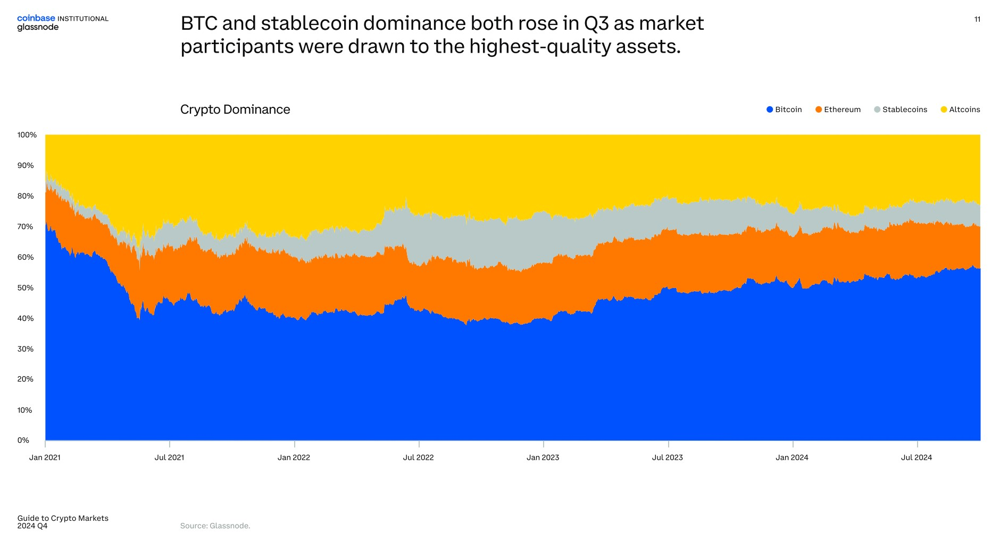

"Desde el éxito arrollador de los ETF al contado hasta el repunte de la actividad en la cadena de bloques y el aumento de los volúmenes de negociación, está claro que los mercados se han vuelto más profundos, más líquidos, más sofisticados y más accesibles", según el informe, elaborado por David Duong, jefe de investigación institucional de Coinbase, y el equipo de analistas de Glassnode.
Además, la aceleración de la adopción de stablecoins y la proliferación de soluciones de escalado de capa 2 de Ethereum "reflejan la maduración del mercado y la ampliación de la economía cripto", según el informe.
En 2024, el mercado de criptomonedas se volvió menos volátil a medida que los inversores se volcaron en activos de mayor calidad, según el informe.
La volatilidad del precio al contado a tres meses de Bitcoin BTC tickers down 61.671 € se sitúa por debajo del 60%, frente a un pico de casi el 130% en 2021, según los datos.
Las stablecoins y el BTC consumieron una mayor parte de la capitalización total del mercado de criptomonedas durante el tercer trimestre de 2024, según datos de Glassnode.
Los ETF de BTC al contado, que empezaron a cotizar en Estados Unidos en enero, atrajeron aproximadamente USD 5,000 millones a la moneda digital durante el tercer trimestre de 2024, según datos de Bloomberg y Coinbase.

En el tercer trimestre, la capitalización total del mercado de stablecoins alcanzó un máximo histórico de aproximadamente USD 160,000 millones "a medida que los participantes del mercado continúan utilizándolas para una variedad de casos de uso nuevos y existentes", según Glassnode.
Los ETF de Ether ETH tickers down 2404,79 € siguieron registrando salidas de dinero, ya que los inversores retiraron efectivo de Grayscale Ethereum Trust (ETHE), que se lanzó con una estructura de fondo diferente en 2017 antes de convertirse en un ETF en 2024.
El rendimiento de los precios al contado de ETH va a la zaga del de BTC, pero "si miramos más allá del precio, vemos un ecosistema de Ethereum en rápido crecimiento, liderado por la fuerza de las nuevas e innovadoras capas 2", según el informe.

En 2024, las direcciones activas diarias de Ethereum aumentaron drásticamente y las transacciones se quintuplicaron en comparación con el inicio de 2023, según el informe. El informe citó una proliferación de redes de escalado de capa 2, como Base de Coinbase, como catalizador.
Al mismo tiempo, ETH "ha recuperado una cuota de mercado sustancial de las tarifas entre las cadenas de bloques L1 que generan tarifas, recuperándose de un mínimo del 9% a finales de agosto al 40% a finales de septiembre", según el informe.